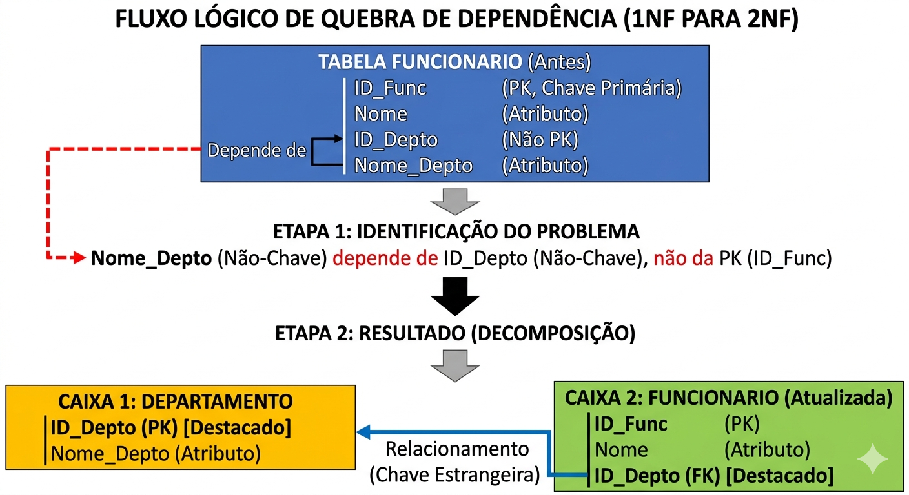
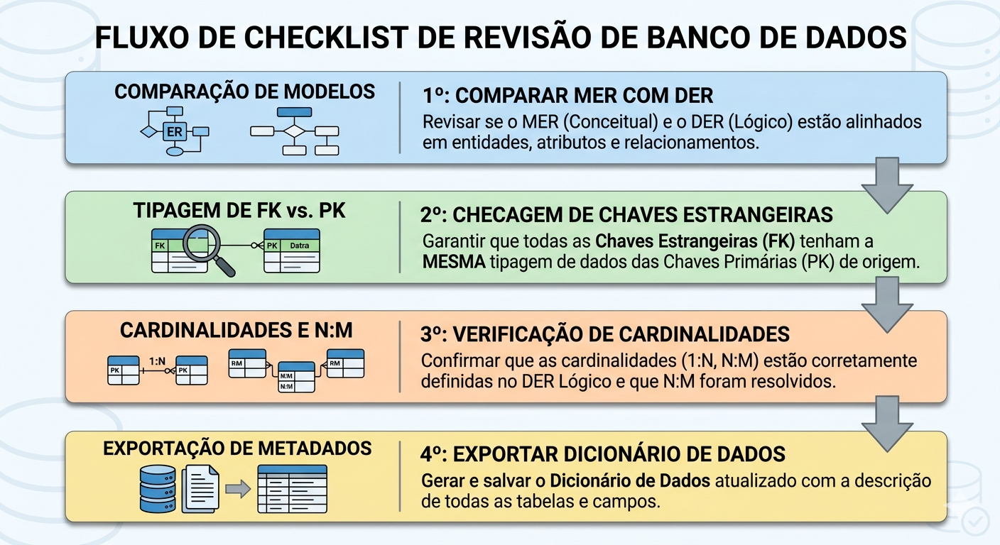

Descrição: Aula focada na identificação e eliminação de dependências transitivas para alcançar a Terceira Forma Normal (3FN). Realização de atividade prática de elaboração dos documentos: Ficha de Levantamento de Requisitos, criação do Modelo de Entidade-Relacionamento (MER) seguida da validação final do Diagrama Entidade-Relacionamento (DER) e organização da documentação técnica para a Situação de Aprendizagem.
Pensem no banco de dados de um aplicativo de delivery que vocês usam todo fim de semana. Imagine que, na tabela de "Pedidos", temos as colunas: ID_Pedido, Nome_Lanche, Bairro_Entrega e Taxa_Entrega.
A Taxa_Entrega é definida pelo Bairro_Entrega, e não pelo ID_Pedido. Se o aplicativo decidir aumentar a taxa de entrega do bairro "Centro" de R$ 5,00 para R$ 7,00, o banco de dados precisará varrer e atualizar milhares de pedidos antigos só para manter a consistência, ou pior, teremos dados divergentes. Esse é o caos causado por uma dependência transitiva.
Como podemos reestruturar os dados desse aplicativo para que a alteração da taxa de um bairro seja feita em um único lugar, refletindo instantaneamente para todos os novos pedidos sem corromper o histórico?
Para que uma tabela esteja na Terceira Forma Normal (3FN), ela precisa obrigatoriamente já estar na 1FN e na 2FN. A regra de ouro da 3FN é clara: toda coluna que não é chave primária deve depender APENAS da chave primária.
Se um atributo não-chave depende de outro atributo que também não é chave, temos uma dependência transitiva. No nosso dia a dia, isso significa que estamos misturando fatos sobre entidades independentes na mesma tabela, o que gera redundância e anomalias de atualização.
Para resolver isso, nós pegamos o atributo independente (como o Bairro e sua Taxa) e o transformamos em uma nova tabela, criando um relacionamento via Chave Estrangeira (FK). É aqui que entra o pensamento crítico: questionar sempre a origem do dado.
Podemos também utilizar ferramentas de IA Generativa para escanear grandes dicionários de dados e sugerir tabelas candidatas à normalização, mas a validação do modelo de negócios sempre será responsabilidade do desenvolvedor.

Após aplicar todas as regras de normalização (1FN, 2FN e 3FN), nosso modelo lógico sofreu diversas alterações: tabelas foram divididas e novos relacionamentos nasceram. Agora, nós precisamos revisar o Diagrama Entidade-Relacionamento (DER) para garantir que ele reflita exatamente o banco de dados que será implementado. Isso garante a rastreabilidade do projeto.
A preparação para a avaliação exige documentação impecável. Precisamos consolidar o Dicionário de Dados, descrevendo os tipos, tamanhos e restrições de cada coluna. Um profissional de desenvolvimento não entrega apenas código; ele entrega soluções bem documentadas.

Na prática da indústria, normalizar até a 3FN (ou Forma Normal de Boyce-Codd - FNBC) já resolve 95% das anomalias. Formas normais superiores são para casos muito específicos e podem prejudicar a performance.
Esse é um trade-off clássico. Em bancos de leitura massiva (como Data Warehouses), fazemos a desnormalização controlada. Mas em sistemas transacionais (OLTP) do dia a dia, a 3FN é a regra.
Pergunte-se: "Se eu deletar o registro principal, esse dado deveria continuar existindo no sistema?". Se sim (ex: a categoria de um produto que foi apagado), ele deve ser uma tabela à parte.
Pode e deve para ganhar tempo na estruturação inicial, mas você deve revisar cada tipo de dado, pois a IA não conhece as regras de negócio intrínsecas da sua empresa.
Tecnicamente sim, mas você quebra a rastreabilidade. A boa prática exige que você atualize o DER primeiro.
1. Levantamento de Requisitos: Converse com o cliente/usuário para entender a regra de negócio. Documentos a serem apresentados:
2. MER (Modelo Conceitual): Identifique entidades e relacionamentos. É como desenhar a planta baixa de um prédio antes de começar a assentar os tijolos.
Define o "número de ocorrências" no relacionamento:
Passagem do Modelo Conceitual para o Modelo Lógico:
Integridade:
Notação:
| No MER (Conceitual) | No DER (Lógico) |
|---|---|
| Entidade | Tabela |
| Atributo | Coluna |
| Identificador | Chave Primária (PK) |
| Relacionamento 1:N | Chave Estrangeira (FK) no lado N |
| Relacionamento N:N | Nova Tabela Associativa |
A normalização até a 3ª forma normal é um critério fundamental da prova prática. Se o modelo tiver dependências transitivas, os relatórios darão resultados errados. O dicionário de dados será o principal documento técnico da apresentação final.
Avaliação objetiva para validar o conhecimento. Em seguida, sairemos da DDL (Modelagem) e entraremos na DML (Manipulação): INSERTs baseados no modelo 3FN e consultas reais com SELECT.